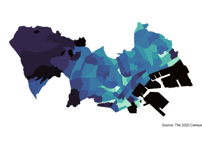

|
SHINICHIRO IWATA | |
Rによる地理空間データの可視化
チュートリアル
1.1 追加データの可視化 1.2 自作データの可視化 1.3 対数による可視化 1.4 ジオメトリの移動による日本地図の可視化 ←（北海道・沖縄県の位置移動） 1.5 地方区分データの可視化
2.1 コミュニティバス路線上の人口密度の可視化 2.2 OpenStreetMapを背景にした情報通信業事業所数の可視化 2.3 土地利用細分メッシュデータによる土地利用状況の可視化 2.4 商圏内の地域メッシュデータの可視化
3.1 小地域統計による人口変化の可視化 3.2 小地域数が変更した場合の人口変化の可視化
4.1 バブルマップによる地価の可視化 4.2 立地適正化計画区域内の地価の可視化 4.3 空間内挿による地価の可視化 4.4 3Dマップによる地価の可視化 4.5 都道府県地価調査データによる地価の可視化 4.6 オープンデータによる商店街通行量の可視化 4.7 ジオコーディングによる犯罪発生情報の可視化
8.1 地物周辺の地理空間データの可視化←（周辺統計量の計算） 8.2 OSMデータによる商店街の可視化 リンク データ（日本）データ（世界）R
都市経済学
ナレッジコミュニティ謝辞 地図の作成やエラーメッセージの対応に対して共同研究者の近藤恵介氏，前職で同僚であった山本雅資氏，現在同僚である中西勇人氏に多くの貴重なアドバイスやコメントをいただいた．隅田和人氏からはオープンデータを紹介いただいた．また，ゼミナール生の質問や問題意識，ゼミナール生とのやりとりがこのウェブサイトを作成する大きな原動力となった．  | |